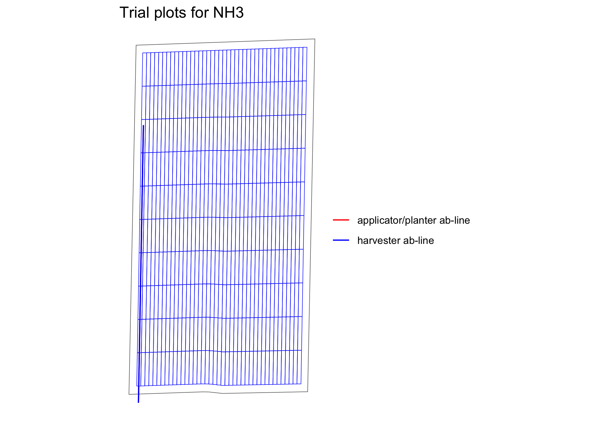

The ofpetrial package allows the user to design agronomic input experiments in a reproducible manner without using ArcGIS or QGIS. The vignette for this package provides more detailed guidance on how to use the package.
Installation
CRAN version
You can install the CRAN version of the ofpetrial package.
install.packages("ofpetrial")Development version
You can install the development version of ofpetrial from Github:
devtools::install_github("DIFM-Brain/ofpetrial")Example
Here, we demonstrate how to use the ofpetrial package to create a single-input on-farm experiment trial design (more detailed instructions on the basic workflow is provided in this article).
Create experimental plots
We start with specifying plot and machine information for inputs using prep_plot.
n_plot_info <-
prep_plot(
input_name = "NH3",
unit_system = "imperial",
machine_width = 30,
section_num = 1,
harvester_width = 30,
plot_width = 30
)
#> Now, we can create experiment plots based on them using make_exp_plots().
exp_data <-
make_exp_plots(
input_plot_info = n_plot_info,
boundary_data = system.file("extdata", "boundary-simple1.shp", package = "ofpetrial"),
abline_data = system.file("extdata", "ab-line-simple1.shp", package = "ofpetrial"),
abline_type = "free"
)
#> Linking to GEOS 3.11.0, GDAL 3.5.3, PROJ 9.1.0;
#> sf_use_s2() is TRUE
#> Warning: There was 1 warning in `dplyr::mutate()`.
#> ℹ In argument: `experiment_plots_dissolved = list(...)`.
#> ℹ In row 1.
#> Caused by warning:
#> ! package 'sf' was built under R version 4.2.3
viz(exp_data, type = "layout", abline = TRUE)
Assign rates
We first prepare nitrogen rates.
#!===========================================================
# ! Assign rates
# !===========================================================
n_rate_info <-
prep_rate(
plot_info = n_plot_info,
gc_rate = 180,
unit = "lb",
rates = c(100, 140, 180, 220, 260),
design_type = "ls",
rank_seq_ws = c(5, 4, 3, 2, 1)
)
dplyr::glimpse(n_rate_info)
#> Rows: 1
#> Columns: 12
#> $ input_name <chr> "NH3"
#> $ design_type <chr> "ls"
#> $ gc_rate <dbl> 180
#> $ unit <chr> "lb"
#> $ tgt_rate_original <list> <100, 140, 180, 220, 260>
#> $ tgt_rate_equiv <list> <82.0, 114.8, 147.6, 180.4, 2…
#> $ min_rate <lgl> NA
#> $ max_rate <lgl> NA
#> $ num_rates <int> 5
#> $ rank_seq_ws <list> <5, 4, 3, 2, 1>
#> $ rank_seq_as <list> <NULL>
#> $ rate_jump_threshold <lgl> NAWe can now use assign_rates() to assign rates to experiment plots.
trial_design <- assign_rates(exp_data, rate_info = n_rate_info)Here is the visualization of the trial design done by viz.
viz(trial_design)
Along with the spatial pattern of the input rates, the applicator/planter ab-line and harvester ab-line are drawn by default.
Acknowledgement
This project was funded in part by a United States Department of Agriculture—National Institute of Food and Agriculture (USDA—NIFA) Food Security Program Grant (Award Number 2016-68004-24769) and by United States Department of Agriculture (USDA) -Natural Resources Conservation Service (NRCS), Commodity Credit Corporation (CCC), Conservation Innovation Grants On-Farm Conservation Innovation Trials (Award Number USDA-NRCS-NHQ-CIGOFT-20-GEN0010750).